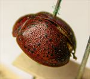
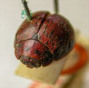
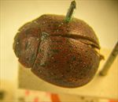
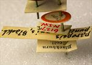
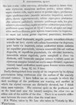

Click on images to enlarge
.jpg){kind=link}

Fig. 1. Paropsis punctipennis type specimen, lateral view
.jpg){kind=link}

Fig. 2. Paropsis punctipennis type specimen, anterior view
.jpg){kind=link}

Fig. 3. Paropsis punctipennis type specimen, dorsal view
.jpg){kind=link}

Fig. 4. Paropsis punctipennis type specimen, labels
{kind=link}

Fig. 5. Paropsis punctipennis, description
Name
Paropsis punctipennis Blackburn, 1897
Corresponds to
Ta02.
Diagnosis and Notes
Blackburn (1897) deals with P. punctipennis as part of his 'subgroup iv' (i.e., those species without "strongly marked characters", and whose greatest height is considerably in front of the middle of the elytral margin). Within that group, he characterises it as:
AA. Prothorax not (or scarcely) explanate at the sides;
B. The punctures of the elytra run evenly over the verrucae, which are scarcely elevated;
CC. The suture without marking [not black in front].
This is almost certainly the same species as Ta02, determined by comparison with type specimen.
Type specimen
Location: BMNH
Label data: /“Type” (red-bordered circle)/ “6127 N.S.W. T”/ “Blackburn coll.”/ “Paropsis punctipennis Blackb.”/.
Female.
Original description
Translation of original description (Figure 5) by ChatGPT, 03/2026:
Moderately broadly oval; very convex; the greatest height (seen from the side) situated before the middle of the elytral margin; less shining; above dark reddish, the head anteriorly and posteriorly black, the prothorax black with four spots (arranged in an arc), the scutellum pitchy, the elytra with black verrucae; beneath blackish-pitchy (the abdomen more or less paler), the antennae and legs reddish, these more or less pitchy. Head rather closely and somewhat strongly punctulate. Prothorax broader than long as 2¾ to 1, broadened from the apex considerably beyond the middle, behind the apex scarcely transversely impressed, punctulate like the head (at the sides coarsely rugulose); sides arcuate, not flattened; posterior angles rounded-obtuse. Scutellum fairly smooth. Elytra scarcely depressed beneath the humeral callus, scarcely impressed behind the base, closely and somewhat strongly, less serially and fairly evenly punctured; furnished with numerous verrucae (these rather confusedly arranged, like the punctures, scarcely elevated); interstices less rugulose; marginal portion scarcely distinct from the disc; the inner margin of the humeral callus much more distant from the suture than from the lateral margin of the elytra. Basal ventral segment somewhat strongly punctured (in the male less closely than in the female). Length 3¾ lines [~8 mm], width 3 lines [~6.4 mm].
References
Blackburn, T. 1897, "Revision of the genus Paropsis. Part II", Proceedings of the Linnean Society of New South Wales, vol. 22, 166-189 (page 169).
Copyright © 2026. All rights reserved.